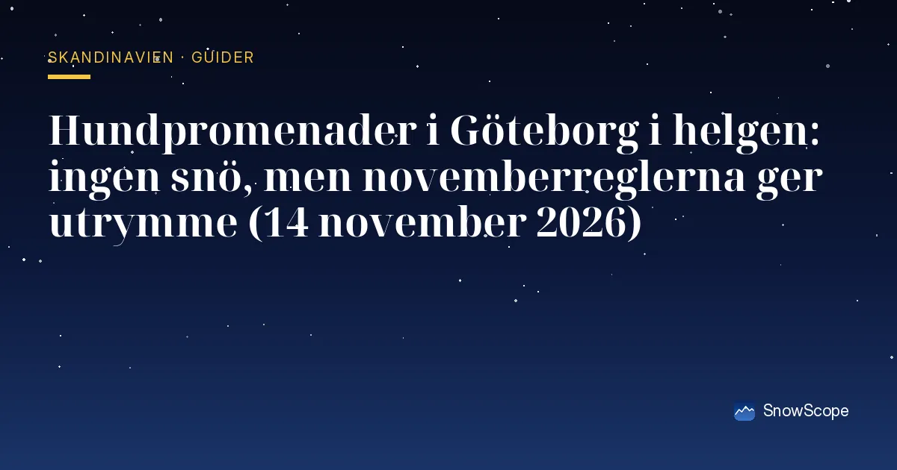

Hundpromenader i Göteborg i helgen: ingen snö, men novemberreglerna ger utrymme (14 november 2026)
Göteborg har ingen snö för sina hundar: stationerna i Askim, Kållered och Härryda mätte alla 0 cm på fredagen, och helgen är mild, upp mot 10 °C på lördagen. Men november är en bra hundpromenadmånad här, eftersom två av stadens säsongsregler om koppel inte gäller.
Se snöprognosen för Göteborg live i SnowScope-appenSnödjup, pudervarningar och 3D-kartan, gratis.
Vad reglerna säger i november
Staden kräver koppel i parker och planteringar från 1 april till 30 september, och i naturen från 1 mars till 20 augusti. Båda ligger utanför de datumen nu. En okopplad hund ska fortfarande vara under kontroll, och vissa platser kräver koppel hela året: torghandel, badplatser, kyrkogårdar, nära skolor och lekplatser, och Slottsskogen, utom i den inhägnade hundrastgården.

De inhägnade hundrastgårdarna
Göteborg har 12 inhägnade hundrastgårdar, som städas en gång i veckan. Bland de största finns Keillers park, cirka 2000 m², och Hinsholmskilen, cirka 1750 m². Fjärdingsparken har 900 m². Slottsskogens rastgård ligger nära Majvallen i parkens västra del.
En längre runda: Delsjöområdet
Delsjöområdet, i stadens östra kant, är ett rekreationsområde på cirka 1370 hektar skog och sjöar. I november gäller där den allmänna regeln för naturen: inget säsongskoppeltvång, men hunden ska vara under kontroll. Räkna med blöta höststigar snarare än snö, och regn på måndag, ungefär 9 till 16 mm.
Tips för skidåkare
- Blöta löv och lera: handduk och tassköljning vid dörren efter Delsjön.
- Andra promenerande och joggare delar sjöstigarna: kalla in hunden när folk passerar.
- För riktig snö med hunden i helgen får du köra långt norrut: närmaste vita bälte ligger i Dalarna.
Fler kartor (externa webbplatser)
Referenser och källor
- SMHI, open meteorological observations (snow depth, daily) www.smhi.se/data/meteorologi/ladda-ner-meteorologiska-observationer
- Göteborgs Stad, rules for dog owners goteborg.se/wps/portal/start/uppleva-och-gora/parker-och-lekplatser/for-dig-som-ar-hundagare/regler-for-hundagare
- Göteborgs Stad, fenced dog yards (hundrastgårdar) goteborg.se/wps/portal/start/uppleva-och-gora/parker-och-lekplatser/for-dig-som-ar-hundagare/hundrastgardar
- Göteborgs Stad, Delsjöområdet nature area goteborg.se/wps/portal/start/uppleva-och-gora/parker-och-lekplatser/naturomraden/hitta-naturomraden?id=3740
- Open-Meteo, weather forecast data (ECMWF and ICON models) open-meteo.com/
Om siffrorna
Snödjup i dag: uppmätt vid väderstationer på morgonen den 13 november 2026 (SMHI). En station mäter snön på sin egen lilla yta, så några kilometer bort och hundra meter högre kan marken se annorlunda ut. Normalt snödjup för datumet: SnowScopes snöhistorik, 46 vintrar (1980-81 till 2025-26), en modell av det förflutna på stadens höjd, inte en stationsserie. Helgen: två vädermodeller (ECMWF IFS och DWD ICON via Open-Meteo), angivna som ett spann. Platser och regler: de officiella sidorna nedan.
Citera den här rapporten
För forskning, undervisning eller press: siffrorna och diagrammen får återanvändas fritt under CC BY 4.0 med den här källhänvisningen.
SnowScope (2026), Hundpromenader i Göteborg i helgen: ingen snö, men novemberreglerna ger utrymme (14 november 2026), https://snowscope.app/blog/sv/2026/11/goteborg-dog-walks-weekend-14-november-2026.html, hämtad 2026-11-14
SnowScope (Atlas Labs). (2026, November 14). Hundpromenader i Göteborg i helgen: ingen snö, men novemberreglerna ger utrymme (14 november 2026). SnowScope snow reports. https://snowscope.app/blog/sv/2026/11/goteborg-dog-walks-weekend-14-november-2026.html
BibTeX
@misc{snowscope2026goteborgdogwalksweekend1,
author = {{SnowScope (Atlas Labs)}},
title = {Hundpromenader i Göteborg i helgen: ingen snö, men novemberreglerna ger utrymme (14 november 2026)},
year = {2026},
month = nov,
howpublished = {\url{https://snowscope.app/blog/sv/2026/11/goteborg-dog-walks-weekend-14-november-2026.html}},
note = {Published 2026-11-14 13:29 UTC; accessed 2026-11-14}
}· CC BY 4.0 · Metoder, data och verktyg →
Följ Göteborg
Gratis: ett meddelande när nysnö är på väg, och prognosen varje morgon.